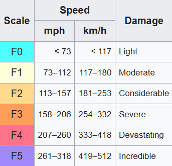
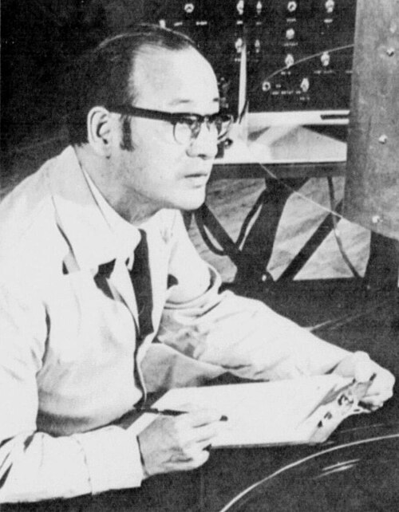

The "Dehanced" Fujita Scale
The Fujita scale (F-Scale) or Fujita-Pearson scale (FPP scale) is a scale for ranking tornado intensity, based primarily on the damage tornadoes inflict on houses, buildings etc. It was used in countries, such as the USA and Canada, till it got retiered and replaced for the EF-scale in 2007. The primary difference between the EF-Scale and F-Scale is, that at the EF-Scale is more "fair". It recognizes that if a tornado only destroys for example a poorly built shed, it’s not as powerful as one that destroys a reinforced brick schoolhouse. The F-scale doesn't account for how strong the buildings were built against a tornado.

The man behind the Fujita scale was Ted Fujita. He was a Japanese and American meteorologist whose research primarily focused on severe weather. His research at the University of Chicago on severe thunderstorms, tornadoes, hurricanes, and typhoons revolutionized our knowledge about these weathers. Together with Allen Pearson, he first introduced the scale in 1971.
